Södermalm i tid och rum. Stockholm
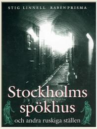
HÄXORNA I KATARINA
| "Det stora oväsendet" i Katarina församling inleds våren 1675 med att en 11-årig pojke från Gävle kommer till stan för att bo hos sin släkting Johan Johansson Lind på Åsögatan. Pojken heter Johan Johansson Griis och är föräldralös. Hans mor har avrättats i Gävle för trolldom, blodskam och dubbelt hor. |
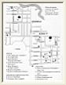 Karta |
{kind=link}
"Gävlepojken" kallas han, och det är från honom och hökare Linds bod i kvarteret Tegelslagaren häxhysterin börjar sprida sig. De flesta som dras in i härvan, både utpekade häxor och anklagare, bor inom några få kvarter kring Katarina kyrka.
Innan "oväsendet" är över har fjorton människor dött. Åtta kvinnor avrättas som häxor, en hänger sig i cellen, fyra barn avrättas som falska angivare och en 15-åring dör i sviterna av spöstrafff. Det kunde ha blivit mycket värre. Häxskräcken och masshysterin nådde Stockholm tämligen sent. Många såväl kyrkliga som världsliga myndighetspersoner var redan från början skeptiska till anklagelserna. Efter ett och ett halvt år segrade förnuftet.
HÄXHAMMAREN
|
Häxprocesserna hade då pågått ute i Europa sedan mitten av
1400-talet.
Flera miljoner människor hade mist livet. 1489 utkom "Häxhammaren", en handbok i hur häxor och
andra i djävulens anhang skall bekämpas. En tysk teolog hade beräknat smådjävlarnas antal till 3
triljoner, 665 biljoner, 366 miljoner. I Martin Luthers huspostilla, som flitigt studerades i svenska
stugor och rabblades i husförhören, kunde man läsa:
|
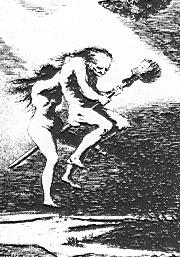 |
Den svenska Blåkullamyten - att häxorna på allehanda redskap som kvastar, käppar, människo- eller djurkroppar, flög till en mystisk plats kallad Blåkulla för att festa med djävulen - kan spåras till slutet av 1500-talet. Under första hälften av 1600- talet dömdes minst ett hundratal häxor och trollkarlar till döden i Sverige. Det var emellertid först på 1660-talet som vi drabbades av den stora häxskräcken. Det började i Älvdalen 1668, fortsatte till Mora och spred sig snabbt till flera orter kring Siljan 1669 och 1670. Från Dalarna gick häxjakten vidare både åt norr och söder. Ytterligare ett par hundra personer, de flesta kvinnor, avrättades som häxor innan det tog slut.
DJÄVULEN VISAR SIG
Ryktena och rädslan för häxor har förstås nått Stockholm långt innan det hela sätter igång på allvar med "Gävlepojkens" ankomst. Två rättslärde, Andreas Stjernhök och Carl Lundius, får på 1660-talet i uppdrag att utreda frågan om trolldomsväsendet. Det sägs att Lundius en kväll medan han sitter och läser en bok om spökerier får besök i sitt rum av själve djävulen.
I den ännu inte helt färdigbyggda Katarina kyrka börjar man redan 1670 läsa häxbönen:
Herre, barmhärtige och nådefulle Gud, vi äro ju ditt folk och nämnde efter din enfödde, käre son, vår Herre och Frälsare, Jesum Christum, förlåt synderna och straffa dock med ditt eget och faderligt ris och låt den lede och grymme själamördaren djävulen icke så gräseligen få rasa, ditt namn försmäda och små oskyldige barn för föräldrarnas skull jämmerligen hantera. Hjälp, milde Herre Gud, de fattige anfäktade, styrk dina tjänare prästerna med din heliga ande, att de i trona kunna göra Satan ett kraftigt motstånd, att han icke ett sådant ohörligit Regimente för över din församlings Ledamöter...
NÄSLÖSKAN PÅ TJÄRHOVSGATAN
|
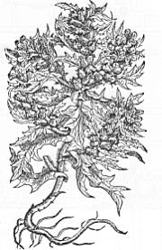 Bolmört. En viktig ingrediens i häxbrygden. |
En av häxorna i Katarina råkar tidigare än andra ut för ryktesspridning och anklagelser. Det är
Britta Sippel, gift med en murmästare Galle och bosatt med man och två döttrar i kvarteret Pelarbacken vid Tjärhovsgatan.
Hon ligger i fejd med flera grannar och kallas hånfullt för "Näslöskan". Öknamnet beror
förmodligen på att
mannen Galle kallas "Näslös" eftersom hans näsa är angripen av syfilis.
Britta Sippel ställs inför rätta för häxeri för första gången i maj 1668. Det är en skeppare
Cornelius med maka från Folkungagatan som anklagar henne för att ha "förgjort" ett fartyg och
att ha trollat så att skepparen på en resa till Dalarna tre gånger i rad rycktes av sin häst.
Under rättegången anklagas hon också för att nattetid smyga sig upp på galgberget med en stege och
stjäla kläder från hängda tjuvar. Murmästare Galles lärpojke går runt i en sådan tjuvatröja, påstår
skepparhustrun Segred.
Några bevis finns emellertid infe och Britta Sippel frikänns. Men sommaren 1674 är det dags igen. En åttaårig flicka som tillsammans med sin mor kommit till Stockholm från Hälsingland, där häxprocesserna redan rasar för fullt, utpekar Britta Sippel som trollkona. Återigen frikänns hon. Rätten ser i stället till att 8-åringen blir omhändertagen eftersom hon verkar sjuklig och förvirrad. |
MYRAS PIGOR
Våren därpå blir det emellertid allvarligare. Vid pingst rapporteras att häxor setts flyga över stan. Och i hökarboden vid Åsögatan har Gävlepojken börjat berätta förfärliga historier om häxor, djävlar och Blåkullafärder. Andra barn och tonåriga pigor från kvarteren omkring lyssnar skräckslagna på hans berättelser. "Det stora oväsendet" har börjat.
Gävlepojken berättar att häxorna rövar bort barn och nattetid tar dem på förfärliga resor till Blåkulla där barnen plågas av djävulen. Barnen som lyssnar får mardrömmar och tror att de själva blir bortrövade av häxorna. Under seanserna i Linds hökarbod kastar de sig på golvet, skriker att trollpackorna kommer för att ta dem och slår vilt omkring sig.
I ett hus vid Södermannagatan i kvarteret Dagakarlen bor en drabant Myra. Han har två unga pigor, Agnes och Annika, som hör till Gävlepojken Johan Griis mest andäktiga åhörare. Det gör också deras vän Lisbeth Carlsdotter, som bor med sin mor i kvarteret Pelarbacken Mindre vid Högbergsgatan. Det är dessa tre tonårsflickor som väver vidare på Gävlepojkens skräckhistorier, skrämmer upp allt fler barn och pekar ut häxorna i trakten.
Gävlepojken är släkt med ytterligare en hökare som bor strax intill. Han heter Hindrich Abrahamsson och har bod på Folkungagatan i kvarteret Båtsmannen. Abrahamssons bod blir häxhysterins andra skvallercentral.
VIPP-UPP-MED-NÄSAN
|
De första att pekas ut som häxor är den beryktade "Näslöskan" Britta Sippel, hennes
syster Anna Sippel Bråk och mössmakerskan Anna Månsdotter med sitt öknamn
"Vipp-upp-med-näsan". Namnet har hon troligen fått för att hon anses högfärdig, vilket
också kan vara en anledning till häxanklagelserna. Anna Månsdotter umgås med systrarna Sippel. Hon bor i kvarteret Kejsaren på Östgötagatan, bara ett par hus från en av de värsta ryktesspridarna, Lisbeth Carlsdotter. Också Anna Sippel Bråk har angivarna farligt nära. Hon bor på Kocksgatan i kvarteret Dagakarlen. Samma kvarter som drabant Myras pigor och ett kvarter från Gävlepojken på Åsögatan. De upphetsade barnen börjar ropa glåpord som "häxa" eller "trollpacka" efter de tre kvinnorna på gatan. "Det är hon som för mig till djävulen", skriker barnen hysteriskt, pekar |
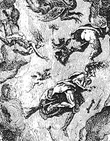 |
DJÄVULENS DROTTNING
|
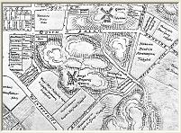 
|
Förmodligen är hon välklädd jämfört med de andra utpekade häxorna. Barnen som anklagar henne för att föra dem till Blåkulla, beskriver henne som en drottning på djävulens gästabud, alltid klädd i de finaste tyger. De tonåriga pigorna säger att det är Anna Sippel som klär dem till brudar när de ska vigas till Den Onde. Hon beskylls för att mixtra med häxsalvor i bagargården, men försvarar sig stolt med att hon är kunnig när det gäller att tillverka mediciner och bara använder naturliga medel som hon köper på apotek. En flicka som tjänat piga hos Anna Sippel påstår att hon vid den tiden fått sin första menstruation och att bagarfrun då sagt till henne att smörja in kroppen med blodet och skriva ett namn med blod i pannan. |
Pigan säger också att Anna skickat henne på underliga ärenden vid midnatt och att hon tillsammans med sin man hållit hemliga möten med häxan Anna Månsdotter i brödkammaren. Sedan häxprocesserna rullat igång på allvar hösten 1675 framträder allt fler vitten mot Anna Sippel. På hennes gård finns en mystisk spökhund, fan själv kommer till henne med vagnslaster av pengar som hon gömmer i källaren, en piga som sagt upp sig hos henne blev liggande sjuk i tre år efteråt, en nyckelknippa som försvann från bagargården har senare hittats på galgberget. När hon grips och förs till fängelset, spottar hon på en skräddare i folkhopen som hånar henne. Han börjar kort därpå hosta blod och dör. En vaktmästare på fängelset som råkat se henne i ansiktet dör också strax efteråt.
|
I april 1676 brinner örlogsskeppet Westervik i Stockholms hamn. Flera människor omkommer.
Anna Sippel anklagas för att genom trolldom ha satt i gång branden från Blåkulla tillsammans
med sin syster Britta.
Lisbeth Carlsdotter vittnar om hur hon sett systrarna Sippel spela tärning i Blåkulla om vem
som ska tända på. Och en av Myras pigor berättar att hon varit med när systrarna försökt tända
eld på Stockholms slott, men misslyckats.
Våren 1675 börjar föräldrarna till de barn som säger att de blir bortförda till Blåkulla anordna så kallade vaktstugor där man samlar barnen om nätterna för att skydda dem mot häxorna. |
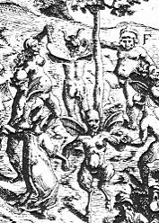 |
I vaktstugorna hålls barnen vakna om nätterna för att inte häxorna skall röva bort dem under sömnen. Utmattade proppas de fulla av hemska berättelser. Gävlepojken, Myras pigor och Lisbeth Carlsdotter ingår, som experter på trolldom och häxeri, i vakthållningen. Barnen blir alltmer hysteriska.
I protokollen från häxprocesserna finns en natt i Pedher Gråås vaktstuga beskriven. "Nu kommer trollpackan", ropar plötsligt en av pojkarna. "Nu är hon på gatan, nu är hon i farstun!" Alla barnen börjar skrika: "Nu tar hon bort oss". Barnen säger att häxan tar sig in genom att sticka en krokig nål genom en springa i väggen. Sen kan hon själv krypa in genom hålet.
"Där är hon, där är hon", skriker barnen och pekar på en punkt på väggen. En av mödrarna hugger med en yxa efter häxan. Barnen säger att hon missar. "Nu sticker hon in huvudet", ropar en av de unga pigorna. "Hugg till!" Modern hugger igen. "Nu råkade du och högg håret av henne", ropar ett barn. Modern tittar efter och finner att det är hår både på yxan och väggen. I processerna efteråt visas en hårtuss från detta tillfälle upp och används som bevis mot Britta Sippel.
TYSK-ANNA OCH RUMPAREMALIN
|
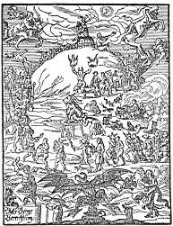 |
Vaktstugorna blir förstås rena smitthärdar.
Häxskräcken sprider sig som
en epidemi bland barnen. Fler och fler häxor pekas ut.
Det är Anna Simonsdotter Hack, kallad Tysk-Anna, som bor på andra sidan Fatburssjön på
Högbergsgatan i kvarteret Marsvinet, Malin Marsdotter, en gammal finska som kallas Rumpare-Malin och bor i kvarteret Kattan på Mariaberget. Hon anges av sina egna döttrar. En
finsk flicka, Margareta Matsdotter, anger sig själv som häxa i den allmänna uppståndelsen.
Hon bor på Åsögatan i kvarteret Timmermannen.
Också en flicka från Ladugårdslandet (Östermalm) anger sig själv som häxa. Det är Maria Jöransdotter, kallad Ängsjöpigan. Hon pekar ut två äldre kvinnor som hon påstår har lärt upp henne till häxa. Den ena är Karin Johansdotter, kallad Smeds-Karin eftersom hon är gift med en smed på Norrmalm. Den andra är Anna Persdotter Lärka, beryktad trollkärring på Ladugårdslandet enligt rättegångsprotokollen. |
Förhören med de misstänkta häxorna börjar på försommaren 1675 i kämnärsrätten i Södra Stadshuset (nuvarande Stadsmuseum). På hösten samma år har anhopningen av anklagade häxor blivit så stor att kung Karl XI tillsätter en extra rätt, det så kallade Konsistorium, med uppdrag att utreda vad som ligger bakom trolldomsryktena. Konsistorium sammanträder i våningen ovanför sakristian i Katarina kyrka. Flera av häxorna fängslas i Södra Stadshusets källare, förmodligen i byggnadens sydvästra hörn mot Götgatan. De rummen används i dag som kontor av Stadsmuseum.
MÖTESPLATSEN PÅ HÄCKLEFJÄLL
|
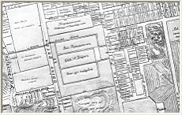 
|
Under vittnesförhören berättas om några platser där häxorna under förfärligt skrän och hemska riter brukar samlas inför avresan till Blåkulla. Ett sådant ställe är kvarteret Häcklefjäll nordväst om Katarina kyrka. I svensk folktro är det en gammal föreställning att områden norr - och alldeles särskilt nordväst - om kyrkor är ett tillhåll för onda makter. I Gamla stan kallades kvarteret nordväst om Storkyrkan länge för "Helvetet". Kyrkogårdar anlades förr inte norr om kyrkorna. Där, utanför den vigda jorden, fanns "främlingshögen" där okända döda, brottslingar, självmördare, rackare och andra utstötta grävdes ned. |
|
Ett annat samlingsställe för häxorna är postmästare Beijers trädgård. Den låg på
Götgatans östra sida och sträckte sig från Bondegatan, mittemot dagens Skatteskrapa,
söderut ungefär till Gotlandsgatan. I dag står bostadshusen i kvarteren Prismat, Pyramiden
och Obelisken på samma område.
En anledning till att just denna plats pekas ut, kan vara att postmästare Beijer har
anknytning till familjen Sippel. Han har affärer ihop med de häxanklagade systrarnas far och
har lånat honom pengar.
Ytterligare en samlingsplats är Stadens Trädgårdar i sluttningen ned mot Hammarby sjö vid Skanstull, där försäkringsbolaget Folksams höghus nu står. |
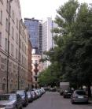  Här låg Beijers trädgård i kvarteret Prismat. Här låg Beijers trädgård i kvarteret Prismat.
|
HÄXDANS I BLÅKULLA
Till Blåkulla färdas häxorna tillsammans med barnen de rövat bort, på kvastar, käppar, kreatur eller människoryggar. Där firar de sedan tillsammans med djävulen ett gästabud där allt sker bakvänt, berättar de bortförda barnen. Musiken är häxor som släpper väder, danser genomförs baklänges liksom bolandet med djävulen som sker skavfötters och rygg mot rygg. Den Onde själv ligger under bordet och skrattar så att hela Blåkulla skakar medan häxorna tappar öl ur hans rumpa.
Alla dessa historier nedtecknas noga av Konsistorium. Någon domsrätt har man dock inte. Processen måste gå vidare till hovrätten. För att skynda på det hela skriver uppskrämda föräldrar i Katarina den 2 mars 1676 till presidenten i Svea Hovrätt:
Uti djupaste ödmjukhet äro vi fattige syndare och sorgbundne föräldrar från St. Catharina församling på Södermalm förorsakade med denna vår enfaldiga böneskrift inför Högvälborne Herren att komma och i Jesu namn bedjandes om hjälp och tröst emot satans våld och raseri ... våra barn bekänna dagligen, ja var natt, att de genom satans instrumenter och häxor bliva till Blåkulla bortförde, två, tre, ja, fyra gånger och där omdöpta i tre onda andars namn, lärde läsa oerhörda förbannelser emot allt vad heligt är, emot sin vilja...
Hovrätten inleder "trollrannsakningarna" den 11 april. Drygt en vecka senare hänger sig den anklagade Smeds-Karin i tjuvakällaren i Norrmalmsfängelset där hon sitter häktad. Hon blir häxprocessernas första dödsoffer. Efter ytterligare en vecka döms Britta Sippel, Anna Sippel Bråk och Anna Månsdotter att "androm ogudacktigom till skräck och wahrnagel och sigh till wälförtient straff halshuggas och å båhle brännas". De avrättas på galgbacken på Stigberget den 29 april.
BÅLEN PÅ GALGBERGET
|
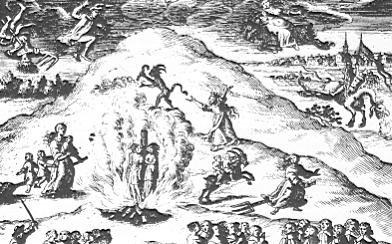 |
Näst i tur är de två förvirrade flickor som angivit sig själva som häxor - Ängsjöpigan och Margareta Matsdotter - tillsammans med Ladugårdslandets häxa Anna Persdotter Lärka. De avrättas i maj. Sedan blir det ett uppehåll i häxprocesserna. Målen flyttas på kungens order över till en nytillsatt kommissorialrätt bestående av sex andliga och sex världsliga ledamöter, som samlas i Södra Stadshuset. Till en början fortsätter allt som förut. I slutet av juli döms Rumpare-Malin och Tysk-Anna till döden. De är båda utpekade som häxor av sina egna barn. Rumpare-Malin döms dessutom att brännas levande. De flesta tror väl att häxor alltid avrättades genom att brännas på bål, |
Hon blir den sista häxan i Katarina som avrättas. Under sommaren har nämligen rätten börjat svänga. Dels beror det förmodligen på att den nya kommissorialrätten fått ett par skeptiska medlemmar som kaplanen i Storkyrkan Erik Noraeus och läkaren Urban Hjärne. Dels har de mest aktiva anklagarna bland de unga pigorna blivit övermodiga.
KAPTENSKAN REMMER PÅ ÖSTGÖTAGATAN
Lisbeth Carlsdotter skryter med alla häxor hon fått på bålet och säger att om hon vill så ska det inte finnas tre människor kvar i stan. Andra pigor springer i vaktstugorna och sprider häxrykten om grevinnorna de la Gardie i Ebba Brahes palats på Götgatan. Och stadskaptenen Jacob Remmers hustru Margareta Staffansdotter, som bor på Östgötagatan i kvarteret Häcklefjäll, sitter redan inne i häktet.
Processen mot kaptenskan Remmer inleds den 6 september 1676. Hon tillhör en annan samhällsklass än de tidigare dömda häxorna och försvarar sig framgångsrikt med hjälp av sin make. Rätten blir alltmer tveksam till vittnenas trovärdighet och börjar noga granska protokollen för att jämföra vad de egentligen sagt i olika förhör.
Den 11 september kommer det första tydliga tecknet på att rätten är på väg att ändra sig. Avrättningen av två redan dömda häxor - Karin Ambjörnsdotter och Dufwans Margete - skjuts upp tills vidare och kaplanen Noraeus meddelar att han inte anser att bevisen är sådana, att han kan sitta i en "blodsdomstol" och döma någon till döden.
Därefter börjar anklagelserna falla ihop. Rätten pressar vittnena allt hårdare. Den ena efter den andra av barnen och tonåringarna erkänner gråtande att alltsammans varit lögner som de uppmuntrats, tvingats eller lurats till av en liten grupp angivare. Tio vittnen tar tillbaka sina anklagelser redan under förmiddagen, ytterligare nio senare på dagen, och sent på kvällen bryter Lisbeth Carlsdotter ihop och bekänner att hon inte vet någonting om Blåkulla.
ANGIVARNA AVRÄTTAS
Under september frikänns sex anklagade som suttit häktade i väntan på rättegång och rätten tar i stället itu med angivarna. Några, som ryttmästaren Pedher Gråå med familj, hinner försvinna från stan. Fyra döms till döden. Den förste som avrättas är Gävlepojken Johan Johansson Griis, bara 12 år gammal. De unga pigorna Myras Agnes och Maria Nilsdotter avrättas tillsammans med Lisbeth Carlsdotter på Hötorget den 20 december 1676. Några dagar senare dör "Näslöskans" dotter Annika Persdotter Galle på tukthuset i sviterna efter fyra dagars spöstraff på fyra olika torg.
Någonstans på Katarina kyrkogård vilar fortfarande stoftet efter den ivrigaste angiverskan Lisbeth Carlsdotter. Hennes mor får efter avrättningen tillstånd att ta hem sin döda dotter och med hjälp av kaplanen i Katarina, Myrander, begravs hon i hemlighet och utan tillstånd från kyrkoherden.
"HWAR SOM BRUKAR TRULDOM..."
Så slutar "det stora oväsendet" i Katarina församling. Året därpå avskaffas häxbönen i Sveriges kyrkor, men fortfarande slår häxskräcken då och då till ute i landet. Den sista dödsdomen mot en häxa avkunnas i Eskilstuna år 1704 och ännu i 1734 års lag heter det:
Hwar som brukar truldom, och skadar annan till kropp eller egendom ... miste lifwet. Får någon död ther af; så skal man steglas och kona halshuggas, och i båle brännas.
Åren 1757 till 1763 är det dags för nya häxprocesser i Dalarna. Flera kvinnor erkänner Blåkullafärder under tortyr. Det slutar emellertid med att de frikänns i häradsrätten och angivarna straffas för vidskepelse. 1779 avskaffas dödsstraffet för trolldom. Men så sent som 1858 drabbas Mockfjärds församling, i samband med en frireligiös väckelse, av den stora häxskräcken. Ännu en gång är angivarna uppskrämda och hysteriska barn.